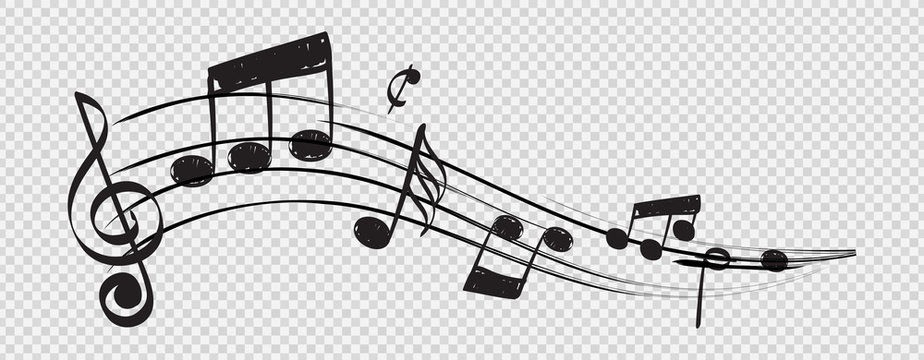

Jokaisella ihmisellä on potentiaalia musiikin tekemiseen. Ihmisistä saa vaikka mitä irti.
Kun otat instrumentin käteen - oli se sitten huilu tai kitara - voit olla epävarma ja uskoa ettei sinulle olisi soittajan lahjoja suotu. Olet väärässä. Improvisoinnin taito tulee suurimmaksi osaksi siitä näkyviin, kuinka hyvin tunnet soittimen eri soinnut ja sen mistä ne saat sointumaan.
Ei kannata epäröidä. Musiikillinen taito tulee siitä kun bruteforceet vain tiettyä soitinta tai kappaletta tarpeeksi kauan että osaat sen ulkoa. Sitä on soittamisen oppiminen. Kuka tahansa jolla riittää kärsivällisyyttä, oppii soittamaan hyvin. Jokainen on syntynyt tähän palloon samoilla sormilla.
Katso netistä kun joku soittaa. Sieltä löytyy myös nuotit. Nuotteihin perehtyminen ja niiden opettelu vie turhaa aikaa, joten niitäkään ei oikeastaan tarvitse opetella... Tämä on huomioitu, ja nuotit on korvattu "tabeilla" joista voit katsoa esimerkiksi monesko väli ja mikä sormi ja milloin menee mihinkin. MONKEY SEE MONKEY DO.
Jos olet haaveillut jonkin soittimen opettelemista, se on hyvin mahdollista. Kunhan yrittämiset muuttuvat ensin teoiksi. Koita "Minä yritän" sijaan sanoa, "Minä teen".
Soittamisen iloa niille jotka tästä inspiroituivat. Tässä vielä pari linkkiä helppoihin biiseihin mitä on kiva soittaa, ja mitä kuka vain voi soittaa.